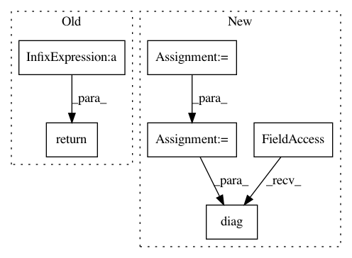

a28284b9bd72fb5f180d489327e6e5571d9aa8d8,gpflow/models/gpr.py,GPR,predict_f,#GPR#Any#Any#Any#,67
Before Change
Knn = self.kernel(Xnew, full=full_cov)
f_mean, f_var = base_conditional(Kmn, Kmm + S, Knn, y, full_cov=full_cov,
white=False) // [N, P], [N, P] or [P, N, N]
return f_mean + self.mean_function(Xnew), f_var
After Change
knn = self.kernel(predict_at, full=full_cov)
kmn = self.kernel(x_data, predict_at)
num_data = x_data.shape[0]
s = tf.linalg.diag(tf.fill([num_data], self.likelihood.variance))
conditional = gpflow.conditionals.base_conditional
f_mean_zero, f_var = conditional(kmn, kmm + s, knn, err, full_cov=full_cov,
white=False) // [N, P], [N, P] or [P, N, N]
In pattern: SUPERPATTERN
Frequency: 3
Non-data size: 6
Instances
Project Name: GPflow/GPflow
Commit Name: a28284b9bd72fb5f180d489327e6e5571d9aa8d8
Time: 2019-09-09
Author: art.art.v@gmail.com
File Name: gpflow/models/gpr.py
Class Name: GPR
Method Name: predict_f
Project Name: GPflow/GPflow
Commit Name: bd1e9c04b48dd5ccca9619d5eaa2595a358bdb08
Time: 2020-01-31
Author: st--@users.noreply.github.com
File Name: gpflow/kernels/misc.py
Class Name: Coregion
Method Name: K_diag
Project Name: GPflow/GPflow
Commit Name: bd1e9c04b48dd5ccca9619d5eaa2595a358bdb08
Time: 2020-01-31
Author: st--@users.noreply.github.com
File Name: gpflow/kernels/linears.py
Class Name: Linear
Method Name: K_diag